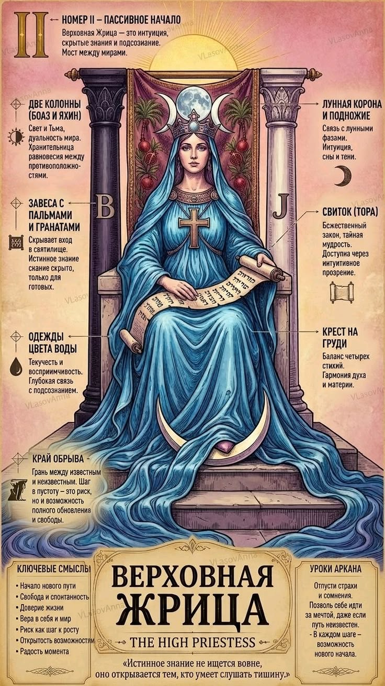

СЕРДЕЧНЫЕ ДЕЛА
2 Аркан в любви и отношениях
Глубокая эмоциональная привязанность и доверие. Жрица ценит душевный покой. В плюсе — чуткий, верный партнер; в минусе — недосказанность и дистанция.

2 аркан воплощает глубинную женскую интуицию, тонкое восприятие невидимых законов мироздания и дар дипломатии. Люди со 2 арканом видят суть вещей задолго до того, как они проявятся на физическом плане.
Глубокая эмоциональная привязанность и доверие. Жрица ценит душевный покой. В плюсе — чуткий, верный партнер; в минусе — недосказанность и дистанция.
Успех в психологии, эзотерике, медицине, исследовательской деятельности, дипломатии и работе с конфиденциальной информацией. Финансы требуют мягкого, последовательного подхода.
Доверяй своему первому внутреннему ощущению — оно никогда не обманывает. Не копи обиды и оставайся открытым миру.
ОТВЕТЫ НА ВОПРОСЫ
В умении чувствовать скрытые причинно-следственные связи и действовать мягкой силой без открытого давления.
Психолог, конфликтолог, аналитик, врач, эколог, исследователь, писатель.
Введи дату своего рождения, и наш движок рассчитает все 10 арканов матрицы личности, кармический хвост и знак зодиака за секунду.